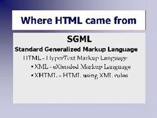

Where HTML Came From
Tim Berners-Lee invention of the web changed the world. But, he didn't create everything on his own.
A lot of technologies already existed that were used in the original specification for the Web. For one, the Internet with its TCP/IP protocols already existed. Tim Berners-Lee used this as a way to connect everyone to the web pages stored on servers.

[D]SGMLAnd, in 1970, Charles Goldfarb had created a markup language for IBM which came to be called SGML (Standard Generalized Markup Language). This markup language would allow different authors to add special codes to their documents which would be used by a computer program to format the output of the document. For example: when the computer program read .ce it would center the next line.
By 1990, SGML was a full-fledged markup. Tim Berners-Lee used SGML and created a subset of elements which he called HTML.
XML
After the Web really took off, in the late 1990's, it became apparent that HTML was too simplistic to handle business data, and Tim Berners-Lee along with the members of the W3C developed a new subset of SGML called XML (eXtended Markup Language). XML tags (or elements) can be customized and XML has precise rules on how each element can be used. XML is designed so computers can more easily communicate with other computers.
XHTML
So, what's XHTML? XML uses very precise rules to make it easier for computers to read the content or data of a page. These XML rules were combined with the existing HTML. Writing precise XHTML makes it possible to have smaller browser programs because the browsers no longer have to "guess" what the web developer meant and in what order.
Summary
SGML was the precursor. HTML tags were created as a subset of SGML in 1990. XML was developed 10 years later to improve computer to computer (i.e. business) communications. XML involves very strict rules or syntax. XHTML is a combination of HTML markup and the stricter rules of XML and was created to make it easier for browsers to understand the code. Using HTML browsers do not have to cover all the different possibilities a programmer might introduce.
The current version is HTML 5 which is not near as exact as XHTML. The HTML5 standard has not been ratified (as of July 2013) but everyone has been using it anyway for several years now.